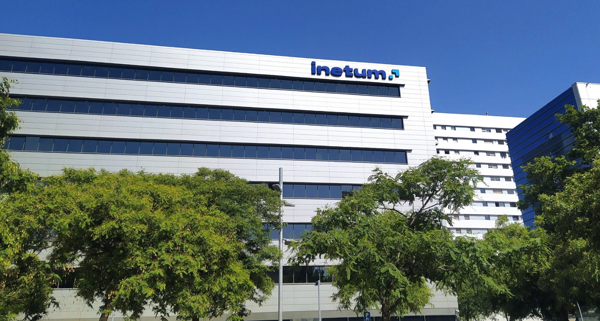

Biografía
Estimados equipos de desarrollo,

Me dirijo a ustedes con entusiasmo y determinación para presentarme como un apasionado de la programación y el desarrollo informático. Mi nombre es Daniel Requena, tengo 26 años y desde los 6 años he estado explorando el vasto mundo de la tecnología, sumergiéndome en la magia de los ordenadores. Sin embargo, fue hace aproximadamente 5 años cuando descubrí mi verdadera pasión por la programación y el desarrollo de software.
A pesar de haber sido un autodidacta durante mis inicios, hace tres años tuve la oportunidad de formalizar mis estudios en este campo. No puedo decir que el camino haya sido fácil; enfrenté desafíos y obstáculos que me exigieron cierta perseverancia. Pero con dedicación y determinación, logré superar cada dificultad y alcanzar mis metas.
En cuanto a mi experiencia laboral y proyectos actuales, los explico mas abajo
Agradezco sinceramente la oportunidad de compartir mi pasión y experiencia con su equipo. Estoy seguro de que mi dedicación y habilidades serían un activo valioso para cualquier empresa de desarrollo informático que busque impulsar la innovación y alcanzar nuevos niveles de excelencia.
Quedo a su disposición para cualquier pregunta o consulta adicional, y espero con interés la posibilidad de colaborar juntos en futuros proyectos.
Atentamente,
Daniel Requena
Proyectos
CarSell
Proyecto FullStack en Flutter para web por ahora, utilizando NestJs para Back.
Esta aplicación permite:
Experiencia Laboral
Desarrollador de Software en Inetum
Trabajé en Inetum durante desde el 16/10/2022 hasta el 18/11/2023 como desarrollador.
· Comenzamos nuestra trayectoria como un grupo de estudiantes, embarcándonos en proyectos pequeños peer to peer. Posteriormente, nos aventuramos en la creación de una aplicación tipo blog, en la cual los usuarios podían interactuar mediante comentarios en las publicaciones. En aquel entonces éramos un equipo de 12 personas, el cual se subdividió en grupos de 4 para abordar diferentes aspectos del desarrollo. Utilizamos tecnologías como NestJs para el backend, y Angular con Ionic para el frontend, llevando a cabo alrededor de 4 sprints antes de que comenzáramos a ser asignados a proyectos más amplios.
· Uno de los proyectos en los que participé fue el de Asistencia Jurídica Gratuita. Este proyecto se desarrolló utilizando SpringBoot, además de hacer uso de HTML y PLSQL, entre otras tecnologías. En este caso, éramos un equipo de tan solo dos compañeros, siendo mi compañero un profesional senior con años de experiencia en la aplicación. Nuestro trabajo implicaba reuniones periódicas, la elaboración de documentación detallada, y tuve el privilegio de participar en la implementación de dos actualizaciones significativas durante el tiempo que estuve involucrado en el proyecto
Educación
Desarrollo Aplicaciones Multiplataforma
IES Joan d' Austria
Fecha: 20/09/2021 => 20/06/2023
Tecnologías y lenguajes con las que he trabajado:
* Java
* SpringBoot
* Python
* Kubernetes
* Android Studio
* html
* sql plsql
* MongoDB